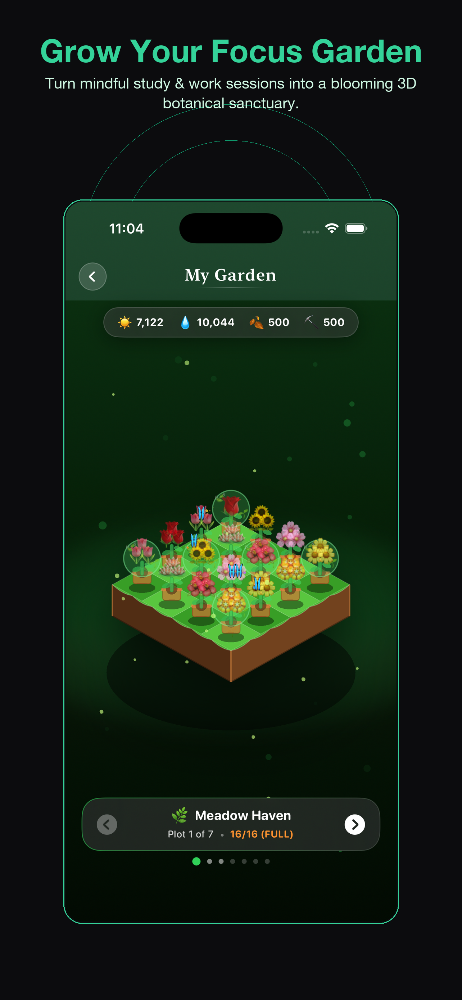
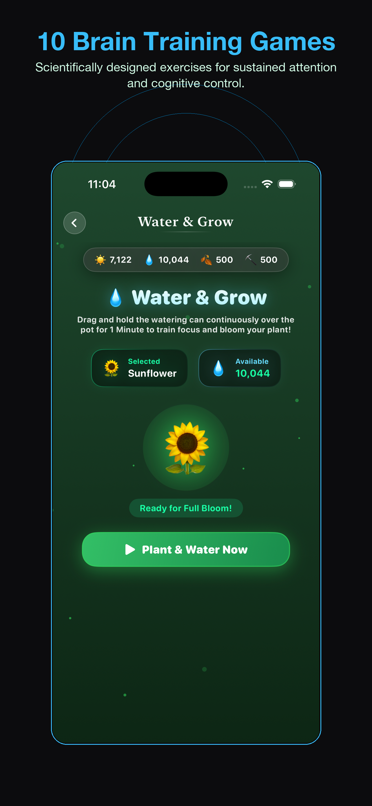
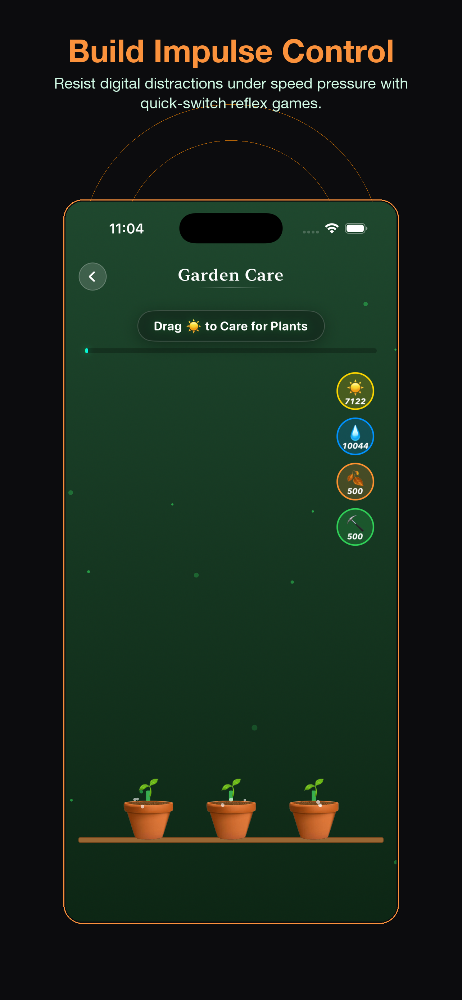
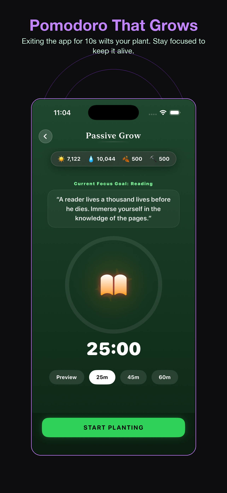
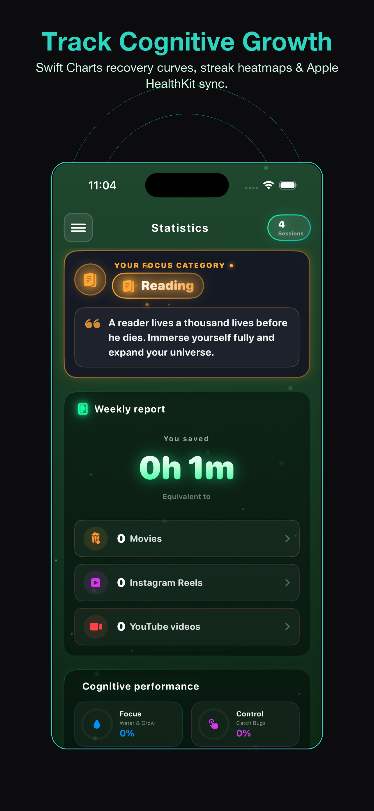

Transforme sua atenção em um
Santuário Botânico 3D Vivo
O timer cognitivo criado para trabalho focado e mentes com TDAH. Treine suas funções executivas em 10 jogos científicos e veja seu jardim 3D florescer.
iOS 17+ • Integração com Apple Saúde • 100% Privado





Onde o foco se transforma em flora
Cada minuto de foco gera energia solar e gotas de água. Cultive espécies exóticas em 7 biomas temáticos.
7 Biomas Temáticos
Do Refúgio Campestre ao Bonsai Zen e Pico Sakura, explore cenas 3D interativas.
Recursos Dinâmicos
Colete gotas de chuva, acumule luz solar e produza adubo para acelerar o crescimento.
Fauna Viva
Veja borboletas voarem e vaga-lumes brilharem nas noites de trabalho profundo.
10 Academias de Atenção Científicas
Fortaleça a atenção sustentada, o controle de impulsos, a memória de trabalho e a agilidade mental.
Pomodoro com Consequências
Sair do app faz sua planta murchar, ajudando você a resistir às distrações das redes sociais.
Proteção Anti-Murchamento
Sair do app por 10 segundos ou mais murcha sua planta e encerra a sessão.
Sincronização Apple Saúde
Cada minuto de foco é registrado como Sessão de Mindfulness no Apple Saúde.
100% Privacidade
Sem servidores de rastreamento ou anúncios. Seus dados ficam salvos no seu aparelho e no iCloud.
Tudo o que você precisa saber
Como funciona o timer anti-murchamento?
Ao sair do app por mais de 10 segundos a planta murcha, criando um compromisso real com o seu foco.
É indicado para quem tem TDAH?
Sim, os 10 jogos foram criados para treinar o controle de impulsos e a recuperação de distrações.
Meus dados de saúde são coletados?
Não, todos os dados são salvos localmente no seu aparelho e no seu iCloud privado.
Quais idiomas estão disponíveis?
Português, inglês, alemão, japonês, chinês, coreano, francês, espanhol e italiano.